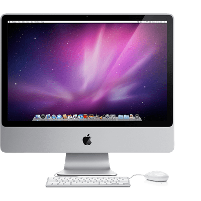

Computadoras
Aple MAC estudio

PROCESADOR. M1 Max. ... MEMORIA. 32 / 64 GB de Memoria Unificada. ... ALMACENAMIENTO. SSD de 512 GB. ... AUDIO. Altavoz integrado. ... PUERTOS TRASEROS. 4 x USB-C (Thunderbolt 4) ... CONECTIVIDAD INALÁMBRICA. Wi-Fi 6. ... DIMENSIONES Y PESO. 197 x 197 x 95 mm. ...
IMAC

Pantalla Retina 4.5K de 24 pulgadas. Resolución de 4480 x 2520 a 218 pixeles por pulgada compatible con 1.000 millones de colores. Brillo de 500 nits. Amplia gama de colores (P3) Tecnología True Tone.
Dell inspiro 24

AMD A6-7310 APU de cuatro núcleos con gráficos RadeonTM R4, 2,4 Ghz/2,0 Ghz RAM : 6 GB ampliable / Disco Duro : 1 TB Pantalla táctil LED TrueLife de 23.8" Full HD (1920 x 1080) IPS DVD, WiFI, Bluetooth 4.0, Teclado y Mouse inalambricos Windows 10 Home
Dell inspiro 14

Modelo: Inspiron 14R. Pantalla: LED 14" Procesador: Intel Core i3-2330M. Memoria RAM: 4GB. Disco duro: 500GB. Sistema operativo: Windows 7 Home Premium. Unidad óptica: DVD-RW. Color: Negro.